Villa Romana del Casale: Near Piazza Armerina lies the villa of a wealthy Roman from the early 4th century, buried for centuries under a landslide. That preserved some 3,500 m² of floor mosaics, the largest such collection in the Roman world: hunting scenes, animals shipped from Africa and the famous "bikini girls" doing sport. UNESCO World Heritage since 1997.
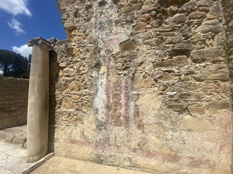
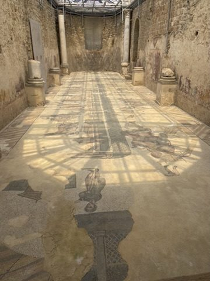
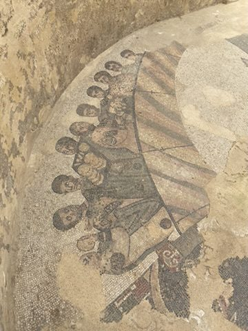
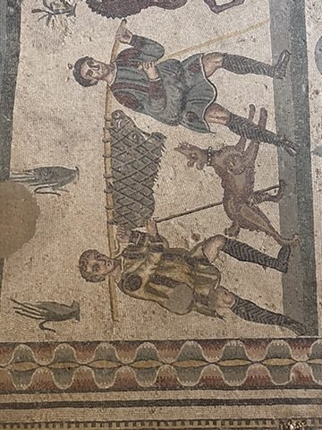
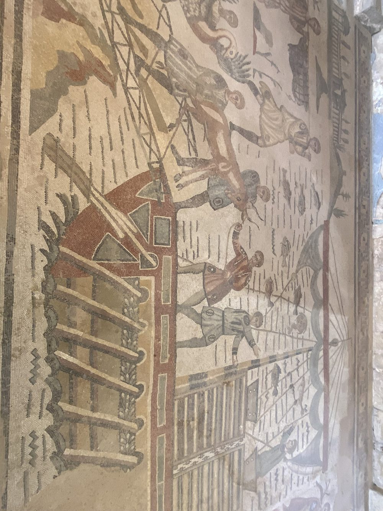
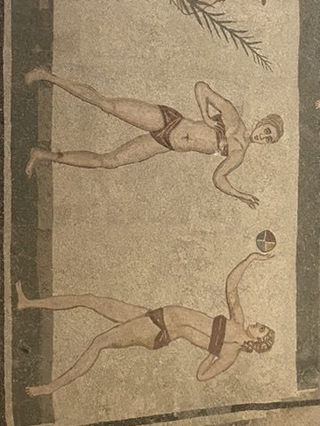
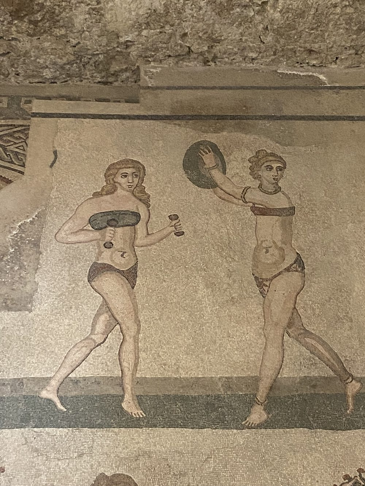
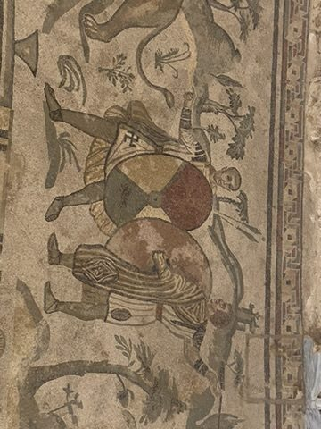
Caltagirone: The ceramics town of Caltagirone is also part of the Val di Noto. Its landmark is the Scala di Santa Maria del Monte: 142 steps, each riser covered in hand-painted majolica tiles. In one church stands a large nativity landscape – crib-making has a long tradition here.
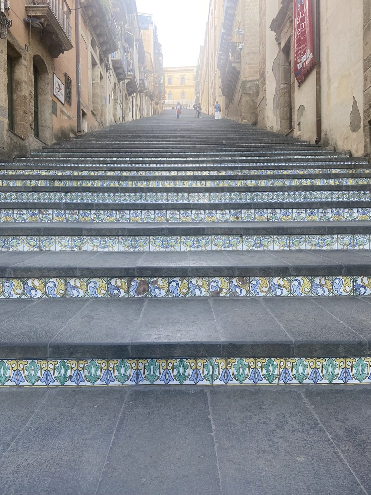
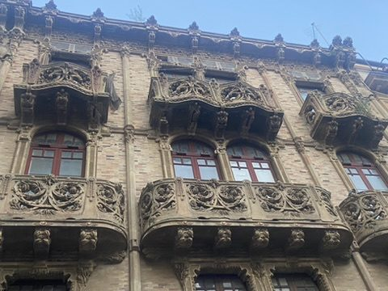
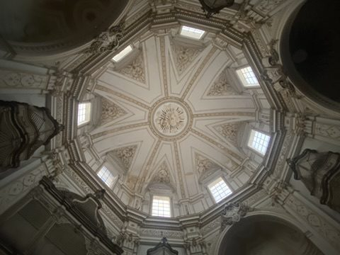
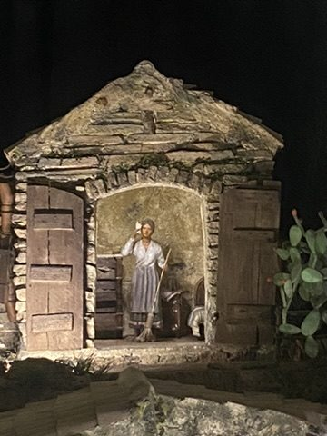
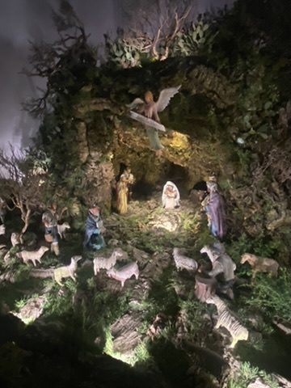
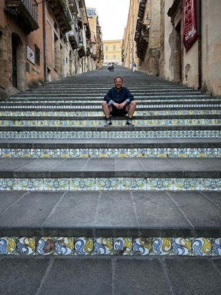
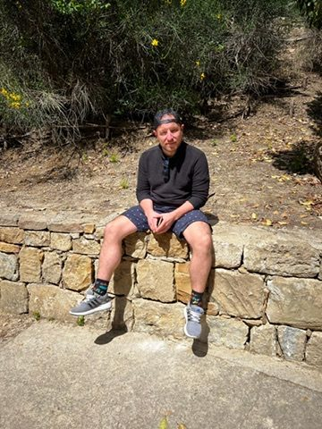
Farewell: On Saturday, April 26, we fly home from Catania.